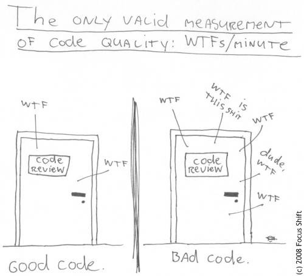
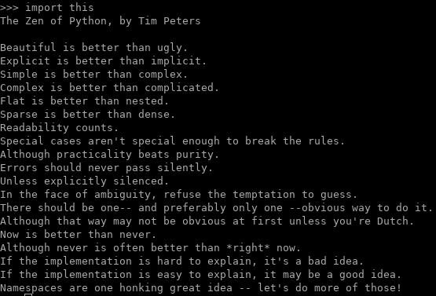
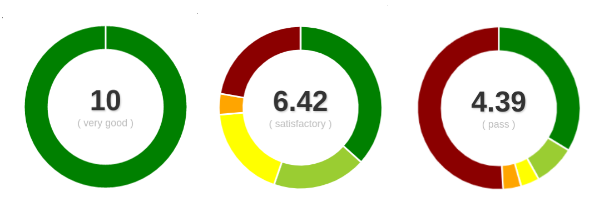
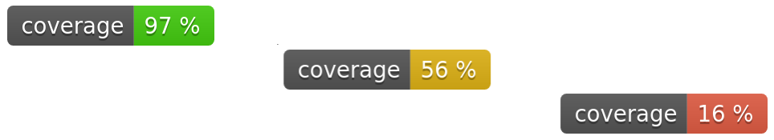

<!doctype html>
<html class="theme-5">
<meta charset="utf-8" />
<link href="../html-slideshow.bundle.min.css" rel="stylesheet" />
<link href="../style.css" rel="stylesheet" />
<script src="https://dbwebb.se/cdn/js/html-slideshow_v1.1.0.bundle.min.js"></script>

<title>Clean Code</title>

<script data-role="slide" type="text/html" data-markdown class="titlepage center">
# Clean Code
## What is good and clean code?
### Mikael Roos
</script>


<script data-role="slide" data-markdown type="text/html">
# Agenda

* What is good and clean code?
    * In a Python environment
* Software philosophies
* Development environment
    * Terminal, Git, GitHub
* Codestyle, linters, metrics
* Unit testing, code coverage
* Documentation

</script>


<script data-role="slide" type="text/html" data-markdown class="titlepage center">
# What is good and clean code?
</script>


<script data-role="slide" type="text/html" data-markdown class="center full">
<figure>

</figure>
</script>


<script data-role="slide" type="text/html" data-markdown class="center full">
<figure>

</figure>

</script>


<script data-role="slide" type="text/html" data-markdown>
# Mikaels definition

> "Good code is written so it is readable, understandable and does well what is intended to do."

<p class="footnote">Do we trust in Mikael?</p>

</script>


<script data-role="slide" type="text/html" data-markdown class="titlepage center">
# Software philosophies
## Think and reason on how to code
</script>


<script data-role="slide" type="text/html" data-markdown class="center full">
<figure>

</figure>
</script>


<script data-role="slide" type="text/html" data-markdown>
# A list of them

Zen of Python, DRY, KISS, POGE, YAGNI, 80-20 (Pareto), Copy & paste programming, Dont fix it, POC, Fake it, Overdoit, Satisficing, Worse is better, Tim Toady, Premature optimizations, Separation of Concerns, Law of Demeter, Technical debt, Broken windows

<p class="footnote">https://en.wikipedia.org/wiki/List_of_software_development_philosophies</p>

</script>


<script data-role="slide" type="text/html" data-markdown>
# DRY

* Don't Repeat Yourself
* Do not duplicate your code
* A bit to much copy & paste?
* Time to organise your code?

<p class="footnote">https://en.wikipedia.org/wiki/Don%27t_repeat_yourself</p>

</script>


<script data-role="slide" type="text/html" data-markdown>
# KISS

* Keep It Stupid Simple
* Do not bother
* Do not complicate it
* Is there a easy path - take it

<p class="footnote">https://en.wikipedia.org/wiki/KISS_principle</p>

</script>


<script data-role="slide" type="text/html" data-markdown>
# POGE

* Principle of good enough
* Good enough
* Are the time worth spending?
* Reasonable acceptable level

<p class="footnote">https://en.wikipedia.org/wiki/Principle_of_good_enough</p>

</script>


<script data-role="slide" type="text/html" data-markdown>
# YAGNI

* You aren’t gonna need it
* Just this nice to have feature...
* Would it not be nice if...
* Do we really really need it, really?
* Will we suffice even without it?

<p class="footnote">https://en.wikipedia.org/wiki/You_aren%27t_gonna_need_it</p>

</script>


<script data-role="slide" type="text/html" data-markdown>
# Terms to reason on code

* Software philosophies are terminology to reason about code and code structure

</script>


<script data-role="slide" type="text/html" data-markdown class="titlepage center">
# Development environment
## Lets move on to practicalities
</script>


<script data-role="slide" data-markdown type="text/html">
# Terminal

* Most of the commands can be written directly in the (bash) terminal
* Works on Windows, Mac, Linux
* GUI desktop applications are nice, but sometimes they are not enough

</script>


<script data-role="slide" data-markdown type="text/html">
# Git

* Git to version the code
* Each change in your code is written to a log
* View exactly how the code grew and come to be
* Blame the one who wrote that part of the code

</script>


<script data-role="slide" data-markdown type="text/html">
# GitHub / GitLab

* Webservices to host and share the code in the Git repo
* Tools to help you develop, maintain and test the code
* The starting point of "devops flow"
    * devops - Developer-Operation
    * Automate testing
    * Analyze code quality
    * Build the application
    * Put into production

</script>


<script data-role="slide" data-markdown type="text/html">
# Code style

* Adapt to a code style
* Format your code
* All members of team write exactly the same code style
* Verify that the correct code style is used

</script>


<script data-role="slide" data-markdown type="text/html">
# Linters

* Statical code analysis
* Check your code for error
* Find troublesome code
* Enforce best practice
* Community guidelines on best practise

</script>


<script data-role="slide" data-markdown type="text/html">
# Metrics

* Software quality metrics
* Analyse and measure the code
* Find troublesome code
* Enforce best practice
* Community guidelines on best practise
* Get a "grade" on your code quality

</script>


<script data-role="slide" type="text/html" data-markdown class="center">
# Code rating compare

<figure>

<figcaption>Compare projects code rating, what can be said about these?</figcaption>
</figure>

</script>


<script data-role="slide" data-markdown type="text/html">
# Unit testing

* Write code that executes your code
* Assert that the correct thing happened
* Test all parts of your code
    * Troublesome parts even more
* Measure code coverage
    * How many lines are covered by unit tests

</script>


<script data-role="slide" type="text/html" data-markdown class="center">
# Code coverage compare

<figure>

<figcaption>Code coverage from different projects.<br>Does it hint something about software quality?</figcaption>
</figure>

</script>


<script data-role="slide" data-markdown type="text/html">
# Documentation

* Document your project
    * README.md
    * RELEASES.md
    * CONTRIBUTION.md
* UML diagrams
    * Class, package diagrams
* Automate generation of documentation from the comments in the code

</script>


<script data-role="slide" type="text/html" data-markdown class="titlepage center">
# Python
## How to do this in Python?
</script>


<script data-role="slide" data-markdown type="text/html">
# Project structure

* How to organise the code into directories
* Prepare to work with modules and unit test
* Community best practice
* Template exists

<p class="footnote">https://gitlab.com/mikael-roos/python-template</p>

</script>


<script data-role="slide" data-markdown type="text/html">
# Python venv

* Python virtual environment (venv)
* Install all tools locally into the repo
* No need to pollute your local system
* Dependencies in `requirement.txt`

</script>


<script data-role="slide" data-markdown type="text/html">
# Linters

* Statical code analysis and mess detection
    * flake8
    * pylint

</script>


<script data-role="slide" data-markdown type="text/html">
# Unit test

Create a test suite and measure how it covers the code

* unittest
* coverage

</script>


<script data-role="slide" data-markdown type="text/html">
# Code style

Use a tool the lints, enforces and fixes your code style

* black

</script>


<script data-role="slide" data-markdown type="text/html">
# Metrics

Analyse and measure your code to find soft spots

* radon-cc
* radon-mi
* radon-raw
* radon-hal
* cohesion

</script>


<script data-role="slide" data-markdown type="text/html">
# Documentation

* pdoc
* pyreverse

<p class="footnote">Is there a difference in analysis & design versus documentation?</p>

</script>


<script data-role="slide" data-markdown type="text/html">
# Docstrings

```
def guess(self, a_number):
    """
    Check it the guess is correct, higher or lower than the actual number.

    Raise an exception if the number is out of range.
    Raise an exception if the number is not an integer.
    """
    if not isinstance(a_number, int):
        raise TypeError("The number should be an integer.")

    if not self.low_number <= a_number <= self.high_number:
        raise ValueError("The number is higher/lower than max/min value.")
```

<p class="footnote">Document code and prepare to generate documentation.</p>

</script>


<script data-role="slide" type="text/html" data-markdown class="titlepage center">
# Wrap it up
</script>


<script data-role="slide" data-markdown type="text/html">
# Programming paradigm

* Imperative programming
* Object oriented programming
* Functional programming
* Python supports all above paradigms being a multiparadigm programming language

<p class="footnote">Does the programming paradigm affects the testability and clean code?</p>

</script>


<script data-role="slide" type="text/html" data-markdown>
# Goal

* Writing code
* Test code
* Use tools to improve work/code quality
* Take proper decisions depending on the situation
* Communicate with others
* Work in teams
* Enhance understanding on how to write good and clean code

</script>


<script data-role="slide" type="text/html" data-markdown>
# Summary

* What is good and clean code?
    * In a Python environment
* Software philosophies
* Development environment
    * Terminal, Git, GitHub
* Codestyle, linters, metrics
* Unit testing, code coverage
* Documentation

</script>


<script data-role="slide" type="text/html" data-markdown class="titlepage center">
# The End
</script>


<script data-role="slide" data-markdown type="text/html">
</script>
